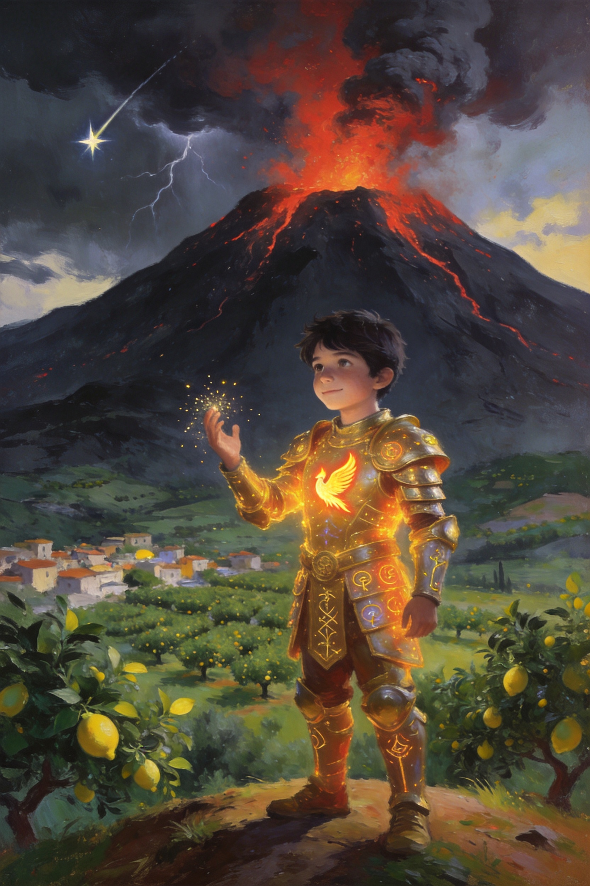
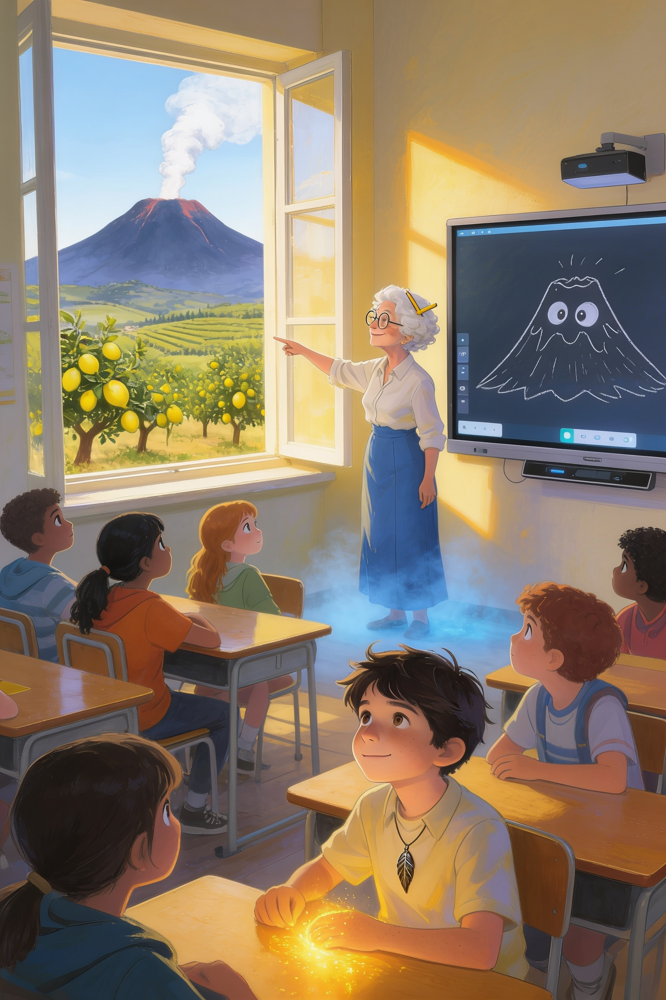
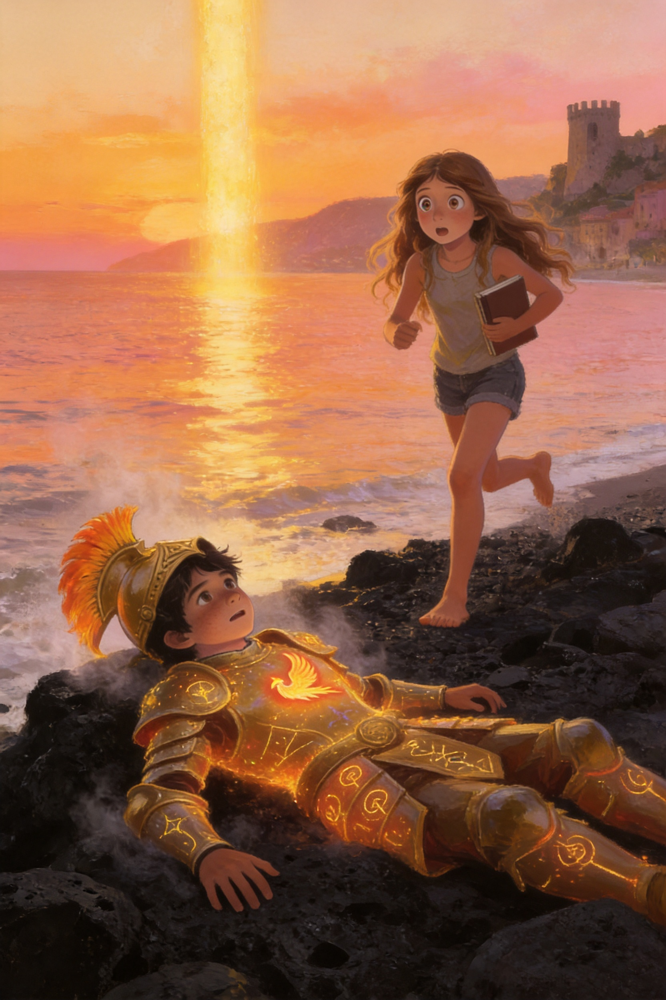
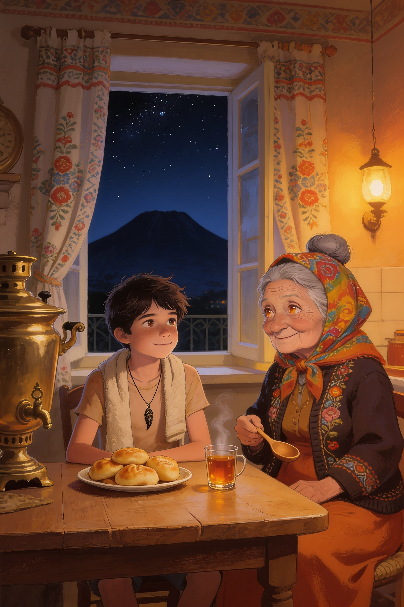

Il Custode
dell'Etna
Vlad
Vlad Editore

Vlad
Vlad Editore
Il Custode dell'Etna
Capitolo 1
✦ ✦ ✦
Alle otto e cinque di un martedì di ottobre, Vlad correva lungo il corridoio della scuola con lo zaino aperto e mezzo panino in bocca.
Dalle finestre entrava l'aria tiepida della piana di Trappitello, che profumava di limoni e di terra. Il mare era lontano, a due chilometri, ma quando tirava il vento giusto sembrava arrivare fin lì per dirti di non preoccuparti. Peccato che il vento non dovesse spiegare niente alla prof di italiano.
— Vlad! — sibilò una voce dietro la porta della seconda media. — Sbrigati!
Era Ludovica. Teneva la porta socchiusa e faceva segni con le mani come un addetto al decollo degli aerei.
— Sei arrivato proprio sulla campanella — disse. — Ancora un secondo e il bidello chiudeva il portone.
— Lo so, lo so — rispose Vlad, ingoiando l'ultimo boccone. — Mia nonna mi ha fatto mangiare tre pirozhki prima di uscire. Con la nonna Tanya non si può dire di no.
— Hai della marmellata sul mento.
Vlad si pulì con la manica. — Adesso?
— Adesso va bene.
Entrarono insieme. La classe era ancora mezza sveglia e mezza no. Sulla lavagna di gesso qualcuno aveva disegnato un'Etna con due occhi e la lingua di fuori. Thomas, in piedi su una sedia, litigava con il cavo della LIM, che da due giorni faceva i capricci. Marco e Stefano discutevano di calcio a bassa voce, ma non troppo bassa. Salvatore, in fondo, fissava lo zaino di Vlad con occhi pieni di speranza.
— Hai ancora dei pirozhki? — sussurrò.
— Salvatore, sono le otto e dieci.
— Appunto. Mancano solo due ore e quarantacinque minuti alla merenda.
Vlad scosse la testa e si lasciò cadere al suo banco, accanto a quello di Ludovica. Lei gli passò un fazzoletto senza guardarlo. Erano migliori amici dalla quarta elementare, da quando Vlad era arrivato dalla Russia senza sapere quasi una parola di italiano e Ludovica era stata la prima a sedersi accanto a lui. Certe cose, tra loro, non c'era bisogno di dirle.
Le prime tre ore volarono tra matematica, ancora matematica e tecnologia, la materia preferita di Vlad. Poi arrivò la merenda delle dieci e cinquantacinque e, alle undici e cinque, la campanella della quarta ora.
Sulla porta comparve la professoressa Marcella Siligato, con la borsa piena di libri e una matita infilata tra i ricci bianchi.
— Ciao, ragazzi! — disse con voce calda. — Sedetevi, sedetevi. Dopo la merenda si perde sempre qualcuno, quindi faccio un piccolo appello. E poi vi voglio raccontare una storia.
Un'altra storia! La classe si illuminò. La prof Siligato era la preferita di tutti: trasformava anche la grammatica in un'avventura.
Cominciò l'appello, e ogni nome portò con sé il suo piccolo rumore.
— Alice.
— Presente! — Alice alzò la mano così in alto che quasi toccò il soffitto.
— Aurora.
— Presente. — Aurora stava finendo un disegno e non alzò neppure gli occhi.
— Beatrice.
— Presente, prof!
— Jaela. Jasmin.
— Presenti! — risposero insieme, e si guardarono ridendo.
— Ludovica. Manuela. Marco.
— Presente — disse Ludovica. — Presente — fece eco Manuela. — Presente, e abbiamo vinto noi ieri — aggiunse Marco, e Stefano gli tirò una gomitata.
— Martina. Matilde. Mia.
— Qui! — Tre voci, tre mani, un solo coro.
— Reyana. Riccardo.
— Presente — disse Reyana, tranquilla. Riccardo salutò con un inchino da re. — Presente, Vostra Maestà della Letteratura!
— Salvatore. Simone. Sofia. Stefano.
— Presente. — Presente. — Ci sono. — Presente, e non è colpa mia se Marco parla troppo.
— Thomas. Vittoria. Vlad. Wijdane.
— Sono qui — disse Thomas dalla sedia, con un cavo in mano. — Quasi funziona.
— Presente — sorrise Vittoria.
— Presente — disse Vlad.
— Presente anch'io — disse Wijdane, e la prof chiuse il registro con un sorriso soddisfatto.
— Bene. Tutti presenti, anche la lavagna di Thomas, speriamo. Allora, ragazzi. Oggi non parliamo di verbi.
Un mormorio di gioia attraversò la classe.
— Oggi parliamo di leggende. E in particolare di una che riguarda quella lì.
La prof indicò la finestra. Oltre i tetti e i limoneti della piana, si vedeva l'Etna: grande, scura, con un filo sottile di fumo bianco che saliva dalla cima.
Vlad sentì qualcosa. Non un rumore: più una piccola scossa, sotto la maglietta, contro il petto. Portò la mano al collo, dove teneva il ciondolo di metallo scuro a forma di piuma che la nonna gli aveva messo quando aveva sei anni, dicendogli: «Non toglierlo mai».
Era tiepido. Più del solito.
— Tanto tempo fa — cominciò la prof Siligato, camminando lenta tra i banchi — gli antichi Greci raccontavano che sotto l'Etna vivesse un gigante. Si chiamava Tifeo. Era così grande che la sua testa toccava le stelle, e dai suoi occhi uscivano scintille di fuoco.
— Come un drago? — chiese Simone.
— Molto peggio. Un drago, almeno, ha le ali e si stanca. Tifeo non si stancava mai. Un giorno sfidò perfino gli dèi, e Zeus, il più potente di tutti, lo fermò con un fulmine e lo seppellì sotto l'Etna per sempre.
— E ancora adesso è lì sotto? — domandò Sofia, a bocca aperta.
— Così dice la leggenda. E quando si gira nel sonno, la montagna trema e sputa fuoco.
— Prof, ma è vero? — chiese Riccardo, con il suo sorriso da furbetto. — Perché io ieri ho sentito il tremito e ho pensato fosse Salvatore che correva a mangiare.
La classe scoppiò a ridere. Salvatore fece finta di offendersi, ma rise anche lui.
La prof rise, poi si fermò accanto alla finestra. Guardò l'Etna. Rimase così, in silenzio, un po' troppo a lungo.
— Prof? — disse Ludovica.

La professoressa non rispose. Quando parlò di nuovo, la sua voce era diversa: più bassa, più lenta, come se arrivasse da molto lontano.
— Dorme ancora — disse. — Ma non per molto. Anástasi... Presto si sveglierà.
Nella classe cadde il silenzio. Perfino Thomas smise di trafficare con il cavo.
Il ciondolo sul petto di Vlad si scaldò così tanto che dovette stringere i denti.
Poi la prof sbatté le palpebre, si passò una mano sulla fronte e si voltò verso la classe con un sorriso confuso.
— Scusate. Dov'ero rimasta? — Rise piano. — Ho avuto un vuoto. Succede, quando si lavora troppo.
— Stava dicendo di Tifeo — disse Ludovica, piano.
— Ah, già! Tifeo. Certo. Grazie, Ludovica.
Gli altri ripresero a parlare, a sorridere, a sistemarsi sulle sedie. Nessuno sembrava aver fatto troppo caso a quella voce. Nessuno, tranne Ludovica e Vlad, che si scambiarono un'occhiata rapida.
«Anástasi» pensò Vlad. Non sapeva che cosa volesse dire. Eppure la parola gli era rimasta addosso, come il freddo dopo un tuffo.
— Per la prossima lezione — concluse la prof, mentre suonava la campanella della quinta ora — voglio che ognuno di voi inventi una piccola leggenda su un luogo della nostra zona, tra Taormina e Giardini Naxos. Lasciate lavorare la fantasia!
La classe si alzò in un fracasso di sedie. Thomas gridò vittoria: la lavagna si era finalmente accesa, giusto in tempo per mostrare lo schermo nero.
Vlad e Ludovica uscirono per ultimi.
— Hai sentito anche tu, vero? — disse lei, a bassa voce.
— La voce? Sì.
— Sembrava un'altra persona.
— Forse era solo stanca.
— Vlad. — Ludovica lo guardò dritto negli occhi. — Tu hai quella faccia.
— Quale faccia?
— Quella che fai quando sai qualcosa e non vuoi dirlo.
Vlad sorrise, ma non rispose. Si sentiva il ciondolo caldo contro il cuore, come un piccolo sole.
— Dopo scuola — disse alla fine — andiamo in bici fino alla spiaggia di Giardini Naxos?
— Pensavo non lo chiedessi più. Ma prima ci tocca ancora inglese.
Non sapevano ancora che quel pomeriggio, sul mare, qualcosa sarebbe caduto dal cielo.
✦ ✦ ✦
Il Custode dell'Etna
Capitolo 2
✦ ✦ ✦
Quando la campanella delle due e cinque chiuse l'ora di inglese, il sole era ancora alto sopra Trappitello e la giornata sembrava avere tutto il tempo del mondo.
— Prima in spiaggia — disse Ludovica, agganciando lo zaino alla bici. — Poi tutto il resto.
— Tutto il resto cosa? — chiese Vlad.
— Compiti, leggende, la prof con la voce strana. In ordine di importanza.
— E in che ordine sono?
— Prima il mare.
Non c'era niente da discutere. Era sempre stato così, dalla quarta elementare, da quando Ludovica gli aveva insegnato a dire «scoglio» senza ridere e lui le aveva insegnato a dire «спасибо» con l'accento giusto.
Pedalarono giù per la strada che scendeva verso il mare, tra muretti a secco e alberi di limone carichi di frutti gialli.
Dopo due chilometri, l'odore dei limoni lasciò il posto a un altro odore, più salato e più grande. Il mare comparve tra le case di Giardini Naxos, azzurro e pieno di luce, e sullo sfondo, alle loro spalle, l'Etna restava là, silenziosa, con il suo filo di fumo.
Lasciarono le bici contro un muretto e si tolsero le scarpe. In ottobre la spiaggia era quasi vuota: un signore con la canna da pesca, un cane che inseguiva i gabbiani e nessun altro. Le onde arrivavano piano, una dopo l'altra, come se contassero fino a dieci.
Sulla punta della baia si vedevano le rocce nere di Capo Schisò, nate da una vecchia colata di lava.
— Secondo me la prof è preoccupata per qualcosa — disse Ludovica, sedendosi sulla sabbia.
— Secondo me ha solo dormito poco.
— Vlad. Non parlava come una che ha dormito poco.
Vlad tirò fuori il ciondolo da sotto la maglietta e lo guardò. Era meno caldo di prima, ma ogni tanto sembrava battere piano, come un secondo cuore.
— Mia nonna dice sempre che il mondo è pieno di cose che non si vedono — mormorò.
— La tua nonna parla sempre per enigmi — sospirò Ludovica. — Però ha quasi sempre ragione.
Comprarono due arancini al bar del lungomare. Ludovica li chiamava arancine, Vlad arancini, e non erano mai riusciti a mettersi d'accordo. Mangiarono guardando il mare e litigando con gioia.
Poi tirarono fuori quaderno e penna per la leggenda della prof Siligato.
— Io scrivo del pescatore e della sirena di Capo Schisò — disse Ludovica. — Lei lo salva, lui si innamora e poi lei sparisce nella schiuma.
— Che tristezza.
— È una leggenda, mica una fiaba. Tu?
Vlad rimase un po' con la penna in aria.
— Una stella che cade nel mare, e chi la trova diventa il custode di qualcosa.
— Custode di cosa?
— Non lo so ancora.
Ludovica gli rubò il quaderno, lesse due righe e glielo restituì.
— Bella. Un po' strana, ma bella. Mi ricorda quella storia dell'Uccello di Fuoco che mi raccontavi in quarta.
— La fiaba russa?
— Sì, quella della piuma che brillava.
Vlad sorrise. Non sapeva ancora perché, ma toccò il ciondolo a forma di piuma.
Il tempo, in spiaggia, passa in un modo tutto suo. Scrissero, risero, fecero una gara di sassi sull'acqua che vinse il cane del signore con la canna da pesca (non partecipava, ma aveva riportato un sasso a tutti).
Quando alzarono la testa, il sole era sceso dietro Taormina e Castelmola. Il cielo era diventato arancione e rosa, e il mare sembrava d'oro liquido.
— Dobbiamo tornare — disse Ludovica. — Mia madre mi sta già per chiamare.
— Ancora cinque minuti.
— Cinque minuti per davvero?
Vlad non rispose. Qualcosa era cambiato. Non c'era più vento. I gabbiani si erano zittiti tutti insieme, e anche le onde sembravano trattenere il fiato. L'uomo con la canna da pesca raccoglieva in fretta le sue cose, guardando il cielo.
— Che strano silenzio — sussurrò Ludovica.
Il ciondolo sul petto di Vlad si scaldò all'improvviso, e poi più, e più ancora. Da qualche parte, lontano, suonò una nota, come un campanello d'argento.
— Vlad — disse Ludovica, indicando in alto. — Guarda.
Una striscia di luce dorata attraversava il cielo, silenziosa, come una matita che disegna sul vetro. Non veniva dall'Etna e non era un aereo. Scendeva lenta, verso il mare, e dietro di sé lasciava una scia di scintille.
— Una stella cadente — mormorò Ludovica. — Di giorno?
— Non è ancora notte.
— Vlad, le stelle non cadono prima di notte.
La luce toccò il mare a una cinquantina di metri dagli scogli neri di Capo Schisò. Non ci fu nessuno schizzo, nessun rumore. Solo un lampo caldo, e poi l'acqua sotto la superficie cominciò a brillare, come se qualcuno avesse acceso una lampada in fondo al mare.
E Vlad sentì una voce. Non nelle orecchie: dentro la testa, calma e vecchissima, in russo.
— Наконец-то. Ты пришёл.
«Finalmente. Sei venuto.»
— Hai sentito? — chiese a Ludovica.
— Sentito cosa?
Allora capì che la voce era solo per lui.
Vlad si tolse la maglietta e lasciò il quaderno sulla sabbia.
— Dove vai? — Ludovica lo afferrò per un braccio. — No, no, no. Vlad, che stai facendo?
— Devo andare a prenderla.
— Non sai nemmeno cosa è!
— Lo so. — Vlad si fermò, sorpreso lui stesso. — Lo so e basta.
Ludovica lo guardò dritto negli occhi, come faceva quando doveva decidere se fidarsi. Poi lo lasciò andare.
— Se non torni entro dieci minuti, chiamo tua nonna.
— Entro cinque.
— Entro tre. E se mi fai paura, giuro che ti spingo io sotto.
L'acqua era ancora tiepida. Vlad nuotò verso la luce, e più si avvicinava più il fondale diventava chiaro, come se sotto di lui fosse sorto un piccolo sole. Poi la vide: una piuma di luce, grande come il suo braccio, che fluttuava lenta nell'acqua e batteva piano, come un cuore.
Allungò la mano.
Appena le sue dita toccarono la piuma, il ciondolo si staccò dalla catenina e volò verso la luce. Le due piume si unirono in un lampo bianco e dorato, e il mare esplose in una colonna di luce.
Vlad sentì l'acqua spingerlo in alto come un razzo. Qualcosa gli si chiudeva addosso, pezzo dopo pezzo: prima uno stivale, poi un guanto, poi una spalla, poi un casco che, per qualche motivo, si piazzò al contrario.
Schizzò fuori dal mare, fece un giro nell'aria, urlò qualcosa in russo e, dopo una curva molto poco elegante, atterrò di pancia su una roccia nera di Capo Schisò, ancora calda per il sole, in una nuvola di vapore.
Ludovica arrivò di corsa, scalza, con il quaderno in mano.
— Vlad?
— Sì? — rispose una voce metallica da dentro il casco.
— Hai un'armatura.
— Lo so.
— Hai anche il casco al contrario.
Vlad si sistemò il casco con un clangore. Sull'orlo del mare, il sole tramontava dietro Taormina.
— Credo di avere un problema — disse.
— Credo di avere mille domande — rispose Ludovica.
E sotto l'Etna, in quel momento, qualcosa di molto antico si girò nel sonno.
✦ ✦ ✦

Il Custode dell'Etna
Capitolo 3
✦ ✦ ✦
L'armatura sparì da sola, mentre l'ultimo pezzo di sole scivolava dietro Taormina. Le placche si sciolsero in scintille, come burro su una padella calda, e Vlad si ritrovò seduto sulla roccia in costume bagnato, con i brividi e il ciondolo di nuovo al collo. La catenina era intatta. La piuma brillava piano, come una piccola lampada.
Il telefono di Ludovica vibrò. Era sua madre.
— Devo andare — disse lei, senza smettere di fissare Vlad. — Ma domani, prima della campanella, mi spieghi tutto.
— Prometto.
— E questa cosa resta tra noi.
— Giuro.
— Anche se la prof ci interroga?
— Anche se ci interroga.
Ludovica annuì, seria come una che ha appena firmato un contratto, e corse alla bici.
Vlad pedalò verso casa nel buio che saliva dai limoneti. Le prime luci di Trappitello brillavano come lucciole. Davanti a lui l'Etna era un'enorme sagoma nera contro le stelle, e per tutto il tragitto ebbe la strana sensazione che la montagna lo stesse guardando.
La piuma sul petto era calda, tranquilla, e batteva piano.
Quando arrivò al cancello, la finestra della cucina era accesa. E sulla soglia, con un foulard colorato in testa e un cucchiaio di legno in mano, c'era nonna Tanya.
Non sembrava preoccupata. Non sembrava nemmeno arrabbiata perché era tardi. Sembrava una che aspetta un treno e sa che sta per arrivare.
— Владик — disse. — Наконец-то.
Vlad sentì un brivido lungo la schiena. Era la stessa parola della voce nel mare.
— Nonna... — Appoggiò la bici al muro. — Tu...
— Entra — disse lei, con quel sorriso che non spiegava mai niente. — Ti si fredda la cena. E poi abbiamo molto da dirci.
La cucina profumava di cipolla dolce, di burro e di tè nero. Sul tavolo, su un piatto con i bordi dipinti a fiori, c'erano i pirozhki, ancora caldi, e accanto un bicchiere fumante nel suo sottobicchiere d'argento.
Nonna Tanya gli mise un asciugamano sulle spalle e non disse nulla finché Vlad non ebbe mangiato il primo pirozhok intero.
— Non mi chiedi dove sono stato? — domandò lui, con la bocca piena.
— So dove sei stato. — Lei si sedette di fronte a lui e sfiorò con un dito il ciondolo a forma di piuma. — La Piuma ti ha trovato.
— Quale piuma?
— Questa. — Nonna Tanya sorrise. — Te l'ho messa al collo quando avevi sei anni, e ti ho detto di non toglierla mai. Non te l'ho detto perché era bella.
Vlad abbassò lo sguardo. La piuma, sul tavolo, brillava piano nel cerchio di luce della lampada.
— Mangia, Vladik — disse la nonna, con voce dolce. — Questa storia è lunga. È più lunga di quanto credi.
— Tanto tempo fa, in un villaggio vicino a un bosco russo, un Uccello di Fuoco volò sopra le case e lasciò cadere una piuma. Tu la conosci dalle fiabe: Жар-птица, lo Zhar-ptitsa. Nelle fiabe l'Uccello di Fuoco è un sogno. Nella nostra famiglia era vero.
— Vera? — sussurrò Vlad.
— Vera. E la famiglia che la trovò capì una cosa: la Piuma non è un tesoro. È una responsabilità. Chi la porta diventa il Custode: riceve una armatura di luce e un compito.
— Che compito?
Nonna Tanya guardò fuori dalla finestra. Nel buio, l'Etna si disegnava nero contro le stelle.
— Vegliare su quella montagna. Sotto c'è qualcuno che deve restare addormentato. Qui lo chiamano Tifeo. Da noi, nelle storie, aveva altri nomi. È molto grande, molto antico, e quando si sveglia, la terra trema.
— Come nella leggenda della prof.
— Le leggende — disse la nonna — sono solo storie vere che qualcuno ha dimenticato.

— Per questo siamo venuti qui — continuò. — Il mio bisnonno portò la Piuma dalla Russia fino ai piedi dell'Etna, nascosta in un medaglione, in una missione che è passata da padre a figlio, da madre a figlia. Non dovevamo usarla. Dovevamo solo custodirla, finché la Piuma non avesse scelto da sola.
— E ha scelto me.
— Ha scelto te.
— Ma perché io? — Vlad strinse il bicchiere. — Non sono più forte degli altri. Non sono un genio. Sono solo uno che è arrivato in Italia in quarta elementare senza sapere come si dice «scoglio».
La nonna rise piano. Poi gli prese la mano.
— Non lo so, Vladik. La Piuma sceglie, e non sempre spiega. Lo capirai quando sarà il momento. Per ora, ricorda tre cose.
Alzò un dito.
— Prima: la Piuma vive di sole. Se la tieni al buio troppo a lungo, si spegne, e con lei l'armatura. Ricaricala alla luce.
Un altro dito.
— Seconda: non dire a nessuno chi sei.
— Ludovica lo sa già — ammise Vlad, arrossendo.
— Lo so. — La nonna sorrise. — Ludovica si è seduta accanto a te quando non sapevi una parola di italiano. Una amica così può sapere tutto.
— E la terza?
Nonna Tanya si fece seria.
— Terza: non fidarti di una voce che non è la sua. Se qualcuno parla e non sembra davvero lui, stai attento.
Vlad posò il bicchiere.
— Nonna, oggi a scuola è successa una cosa. La prof Siligato, mentre raccontava di Tifeo, ha cambiato voce. Ha detto una parola strana: Anástasi. E poi non si ricordava più niente.
Il cucchiaio di legno si fermò a mezz'aria.
— Anástasi — ripeté piano la nonna. — In greco significa «risveglio».
Per un momento la cucina sembrò più fredda. Poi Nonna Tanya scosse la testa.
— Non dire niente alla professoressa. Non ancora. Prima osserviamo. Una nonna osserva sempre.
— Da domani — disse alla fine — dopo scuola, ti insegno a usare la Piuma. Un Custode che non sa cosa fa è pericoloso per sé e per gli altri. Intesi?
— Intesi, nonna.
— Ora a letto. Hai le guance rosse come un pomodoro.
Vlad si stese nel suo letto con la finestra socchiusa. Dalla camera si vedeva l'Etna, nera sotto le stelle, con un puntino rosso sulla cima, come una brace nascosta. Pensò alla voce nel mare, a Ludovica con il quaderno, alla prof che aveva detto «presto si sveglierà».
Il ciondolo sul petto si accese piano, e da qualche parte, dentro la sua testa, la voce vecchissima sussurrò in russo:
— Спи, Влад. Завтра всё начнётся.
«Dormi, Vlad. Domani comincia tutto.»
Fuori, per un solo istante, il vetro della finestra si coprì di brina, in una notte tiepida di ottobre. Poi si sciolse, e non ci fu più niente.
✦ ✦ ✦